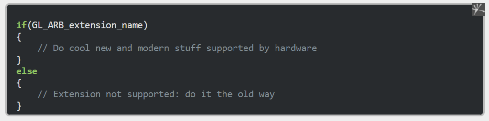
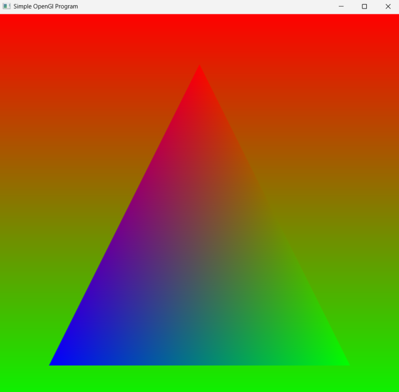

March 1, 20251 yr comment_1020029 Week 0 - Simulation Plan This week I started off by doing some research on OpenGL. Here are three key things I learnt: Core-profile mode is the modern way to run OpenGL however it is harder to learn than Immediate mode since it is less abstracted from the actual rendering system. This gives the user more control over the rendering but requires them to have a more literal understanding of the rendering pipeline. You can use the latest extensions released by graphics manufacturers not yet added to core OpenGL and check if the hardware that it's being run on supports it. If not then an alternative method is used, but if it is then the application gets optimised. This allows developers to be more versatile and efficient.  You need to use cmake to get the FreeGLUT to work. This can be done by downloading cmake off the internet and then using the GUI to compile the FreeGLUE files and open them as a buildable visual studio project. I ended up having to edit the minimum version of cmake allowed in the FreeGLUT files to get it to work due to an error. After this, it did work however, after more research, I realised that you can just download the desktop development with the C++ package for Visual Studio. It comes with cmake installed and all you have to do is open up the FreeGLUT directory using Visual Studio select build all then install. It automatically recognises it and does the rest. After this I had to find the newly generated include and library folders. These were then used in the new project I later made (you have to point to them in the properties window and the linker). After this, I installed something else called GLAD and also had to include those tailored files in the include and library directories. This was all so I could reference the correct libraries and functions when using FreeGLUT. I'm not entirely sure what I want to do for the project yet, but I like the idea of something in the outdoors, possibly based on one of my favourite games such as Farcry 5. If not that then something like a Mexican/European house or hamlet could be fun to do. Plants could be animated by swaying and it would be sunset; there would also be a shop sign and potentially a body of water. One of the hardest things I have found when trying to learn C++ is that it is very "close to the metal". I feel like in C# you are a lot more protected from doing things the wrong way whereas in C++ you can go far wrong when using things like pointers to access memory addresses directly. This can cause many problems because the memory may not have even been initialised yet so you could be accessing memory outside the scope of your program which is very dangerous since it could crash the computer or interrupt the operating system/other software which is currently running. Additionally, it is easier to do simple things in C# compared to C++. Things such as printing text to the console can be overly complex. For example, in C#, to print a new line of text to the console you would use a simple function called Console.Writeline("Hello World!"). Whereas, in C++ you would have to use std::court "Hello World!" + std::endl. I understand the alternative is to type using namespace std at the top of the file but this can be considered bad practice by some and is beside the point. Lastly, C# is much more user-friendly because it allows for GB (garbage collection) as opposed to using new and delete to add and remove data from the heap, which is much more time-consuming and can lead to many human errors. I had to get refreshed on this here. Link to comment https://daf.staffs.ac.uk/topic/74549-astles-jake-a013867o/ Report
March 6, 20251 yr Author comment_1023106 Week 1 I made a triangle and experimented with giving it a background and adding other shapes etcetera.  Link to comment https://daf.staffs.ac.uk/topic/74549-astles-jake-a013867o/#findComment-1023106 Report
March 18, 20251 yr Author comment_1028906 I got the triangle to spin and the background to shrink and grow. I managed to get both variations of this to work where only the rectangle or triangle grows, by changing when the glPopMatrix(); was called. I even managed to get them both to spin and scale simultaneously. Screen Recording 2025-03-18 144713.mp4 4.14 MB · 0 downloads Link to comment https://daf.staffs.ac.uk/topic/74549-astles-jake-a013867o/#findComment-1028906 Report
March 18, 20251 yr Author comment_1028996 I got the triangle to rotate using the keyboard. Screen Recording 2025-03-18 161126.mp4 10.22 MB · 0 downloads Link to comment https://daf.staffs.ac.uk/topic/74549-astles-jake-a013867o/#findComment-1028996 Report
March 25, 20251 yr Author comment_1033199 Week 4 I made a green teapot rotate in 3D! I did this using the keyboard controls. Link to comment https://daf.staffs.ac.uk/topic/74549-astles-jake-a013867o/#findComment-1033199 Report
March 27, 20251 yr Author comment_1034515 Week 4 This lesson, I made many squares spawn in and rotate. I haven't got them to come towards the camera yet but the code behind it all is far more optimised. 20250327-2103-50.8990497.mp4 1.24 MB · 0 downloads Link to comment https://daf.staffs.ac.uk/topic/74549-astles-jake-a013867o/#findComment-1034515 Report
May 5, 20251 yr Author comment_1046760 Week 7 I have just finished implementing dynamic text input with a custom font library. The TGA loader also now works. Therefore, images no longer need to be in a raw format to work, although that is still an option. Lighting and 3D object texturing have also been finished. The 3D objects also spawn in random locations and rotate randomly. Objects are also lit with a red light and have a nice purple shimmer every few seconds. The shimmer was done intentionally by changing the spectral value on the lighting. I also chose a crazy font on purpose to make it obvious that I wasn't using a basic one. By using the Freefont library (and dll/header files) I think I can use any font (since I just need a .ttf file). This is much better than the basic options included with FreeGLUT: Helvetica, Times New Roman and the other basic bitmap option. Link to comment https://daf.staffs.ac.uk/topic/74549-astles-jake-a013867o/#findComment-1046760 Report
May 6, 20251 yr Author comment_1047949 Week 7 Finished Fonts and Menus Menus now work fine and the fonts change with the dropdown. The friction can also be toggled, along with the direction the objects are moving in. Additionally, you can now type properly using different fonts, can choose if you want to begin typing and can use backspace properly to edit typed text. Link to comment https://daf.staffs.ac.uk/topic/74549-astles-jake-a013867o/#findComment-1047949 Report
May 13, 20251 yr Author comment_1054800 Week 9 For my final addition to the project, I added a sphere object, fixed the terrain texture so it now looks grassy and finished implementing proper camera movement. Additionally, I improved the storage of scene objects. They now function from a dynamic linked list as opposed to a basic array. A controls option was also added to the menu for the camera. The lighting may look a bit odd but this was intentional as I thought the purple spectral effect was cool. The video did not record very well either so some of the colours may look off. Edited May 13, 20251 yr by Jake Astles Added the video Link to comment https://daf.staffs.ac.uk/topic/74549-astles-jake-a013867o/#findComment-1054800 Report

")